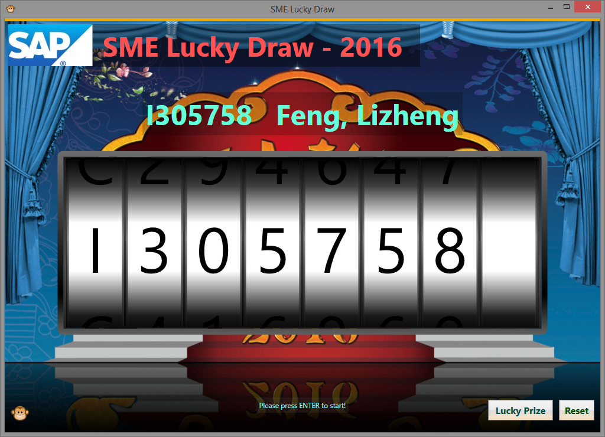
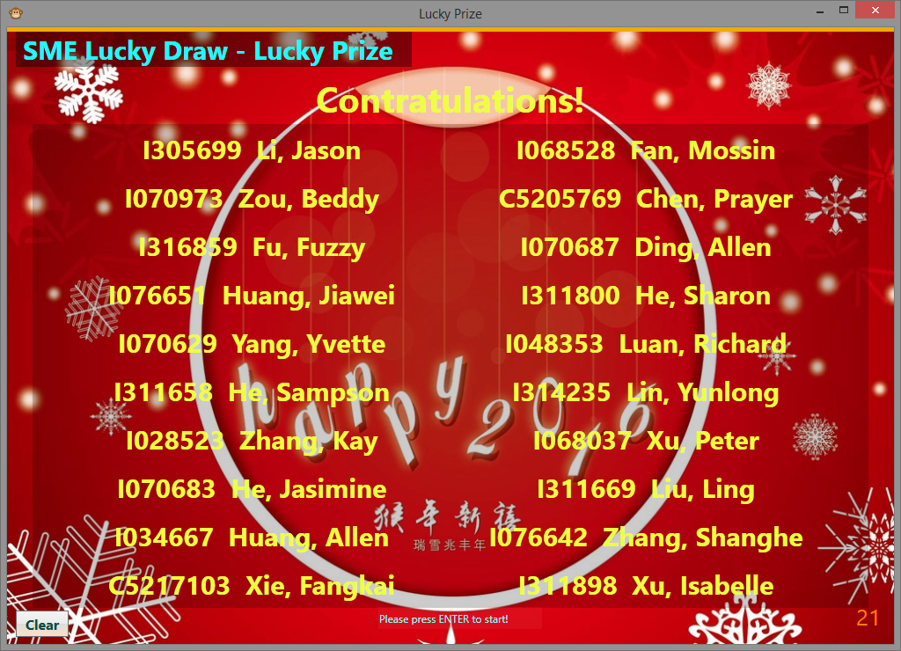

SME Lucky Draw
SME Lucky Draw app source code.
View the Project on GitHub
zzuwzj/LuckyDraw
Download
ZIP File
Download
TAR Ball
View On
GitHub
用于部门年会的抽奖程序，使用C#(WPF)开发，可实现类似老虎机方式抽取员工ID或批量抽取阳光普照奖。
采用单例模式，大奖与阳光普照奖共享抽奖池
数据源采用Excel格式。
使用Enter键控制开始停止
具有log功能，可记录抽奖结果，供后续查阅使用，需自行下载log4net.dll并在VS工程中引用
具有记忆功能，防止程序崩溃导致抽奖记录丢失，程序启动自动读取配置信息更新抽奖池
已经连续4年在部门年会，部门全体员工大会等大型活动中使用多次
程序截图
 